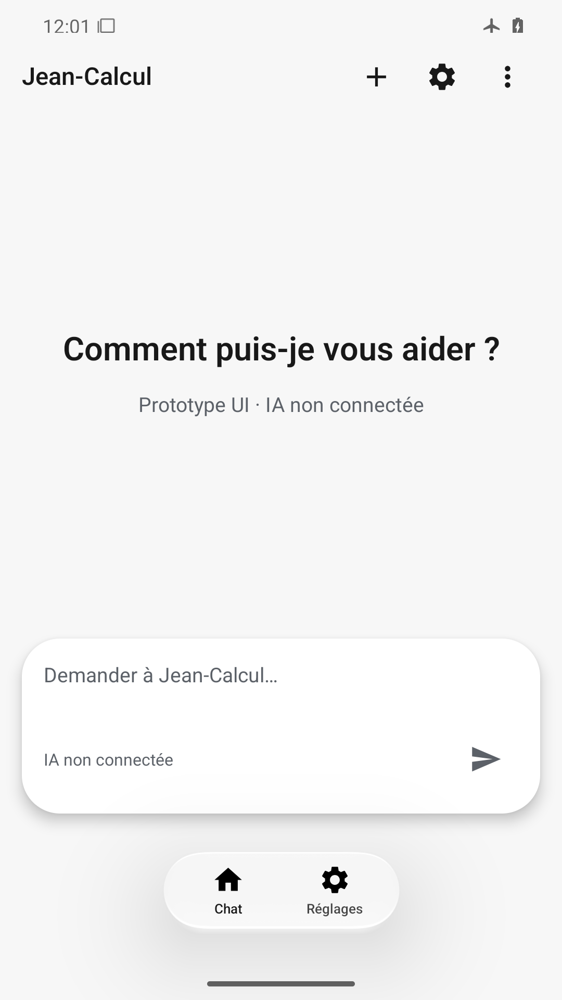
Accueil, capsule et navigation complets ; contraste et marges système lisibles.
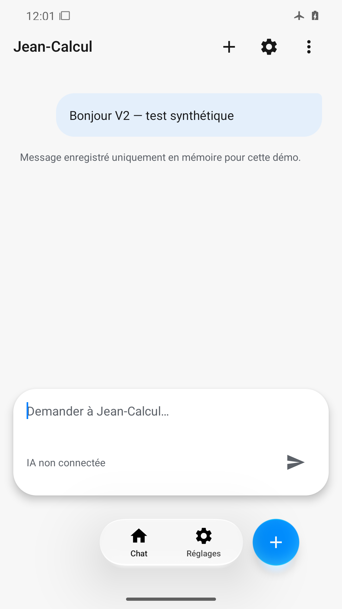
Message et avertissement mémoire lisibles ; navigation et bouton bleu de nouvelle conversation sont désormais visibles après fermeture du clavier.

Accueil restauré sans message ; la capsule de navigation est vide, icônes et libellés absents.
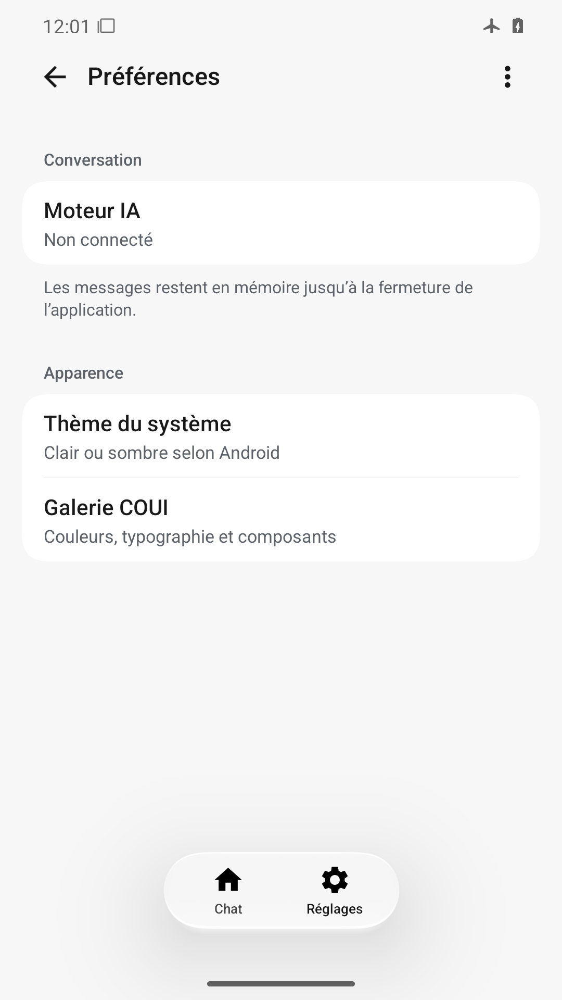
Groupes et résumés lisibles, actions et navigation présentes, sans texte coupé.
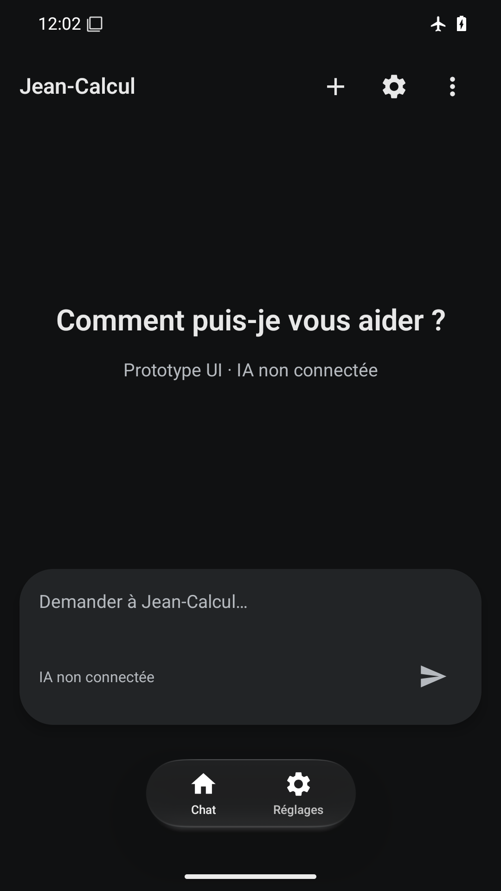
Surfaces sombres distinctes, textes et icônes clairs, navigation et statut lisibles.
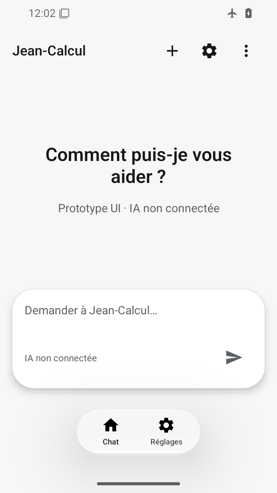
360×640 dp : titre replié sur deux lignes, saisie et navigation visibles sans recouvrement.
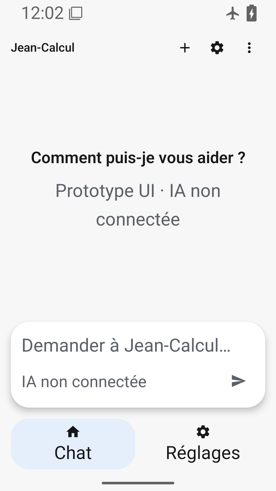
Police 200 % : corps agrandi, navigation à hauteur libre, aucune coupure ; titre COUI fixe documenté.
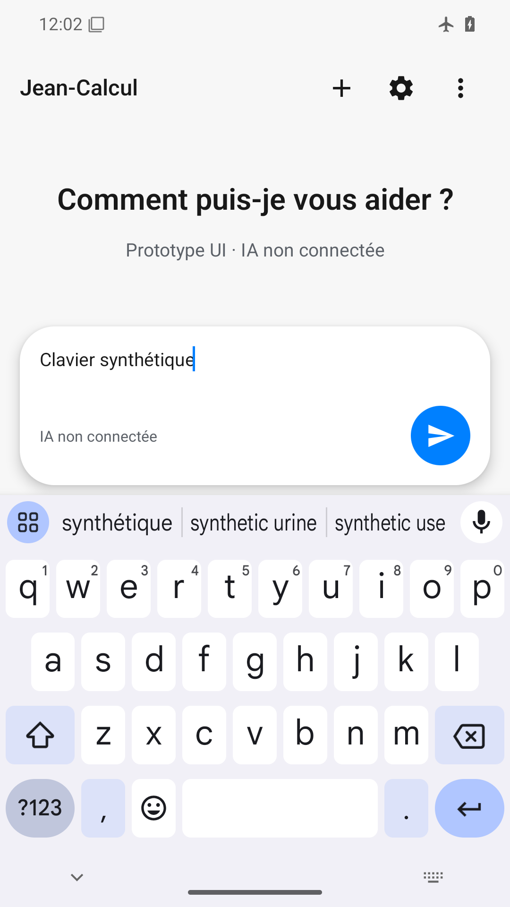
Texte saisi et Envoyer au-dessus du clavier ; l’en-tête et ses actions sont toujours absents.
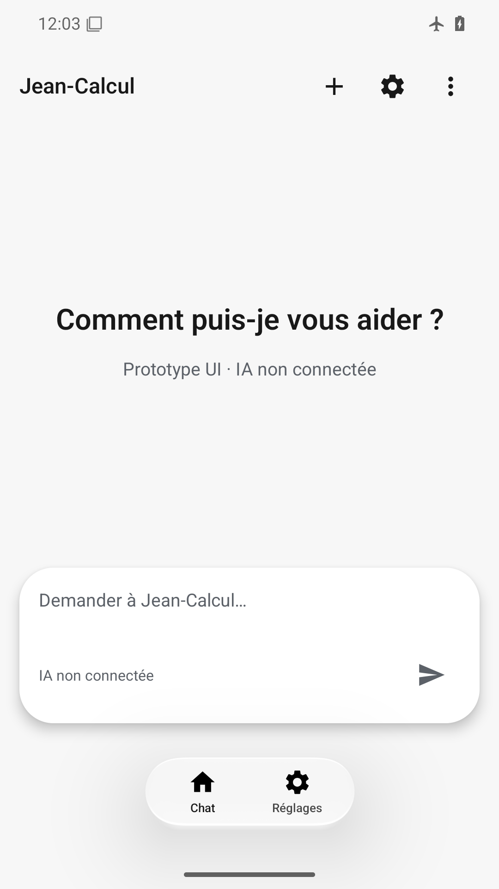
État statique avec animations désactivées lisible et navigation complète ; fluidité non prouvée.
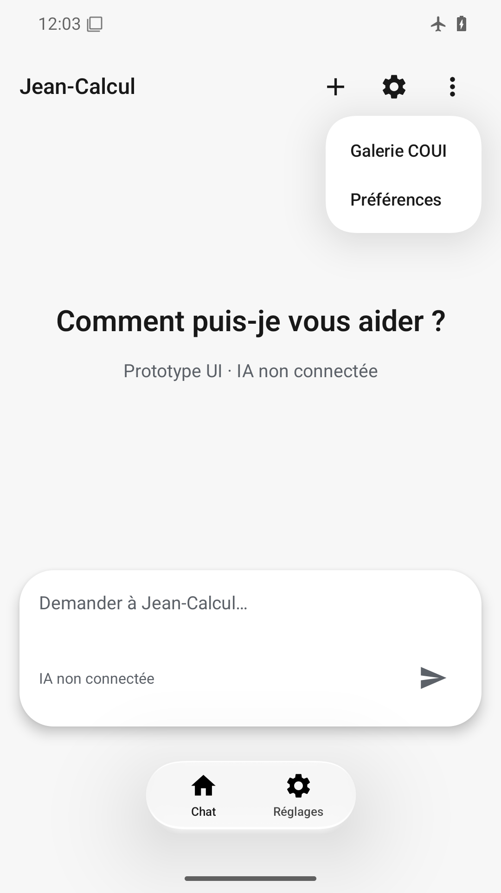
Deux entrées natives lisibles, menu ancré à droite ; saisie et navigation restent visibles.
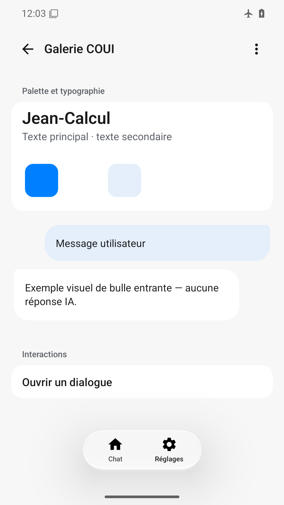
Exemples et textes lisibles ; seuls les libellés Chat/Réglages sont visibles dans la navigation, sans icônes ni surface.
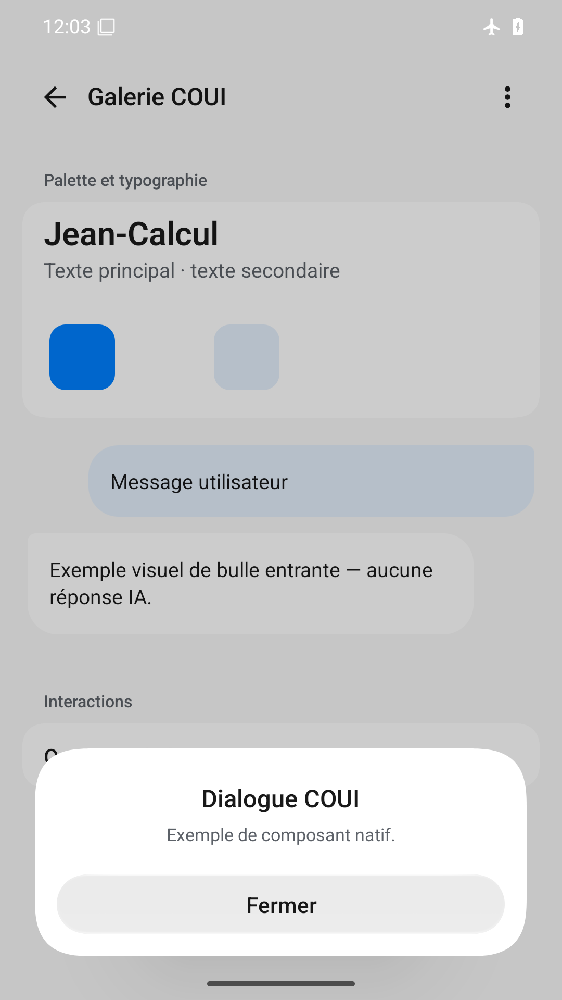
Titre, message et bouton Fermer lisibles, dialogue au-dessus du geste, fond assombri.
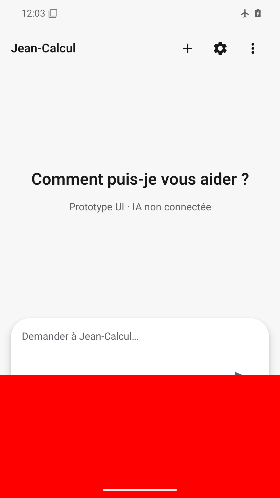
Surcouche rouge basse masquant navigation et action d’envoi, défaut volontaire correctement identifié.